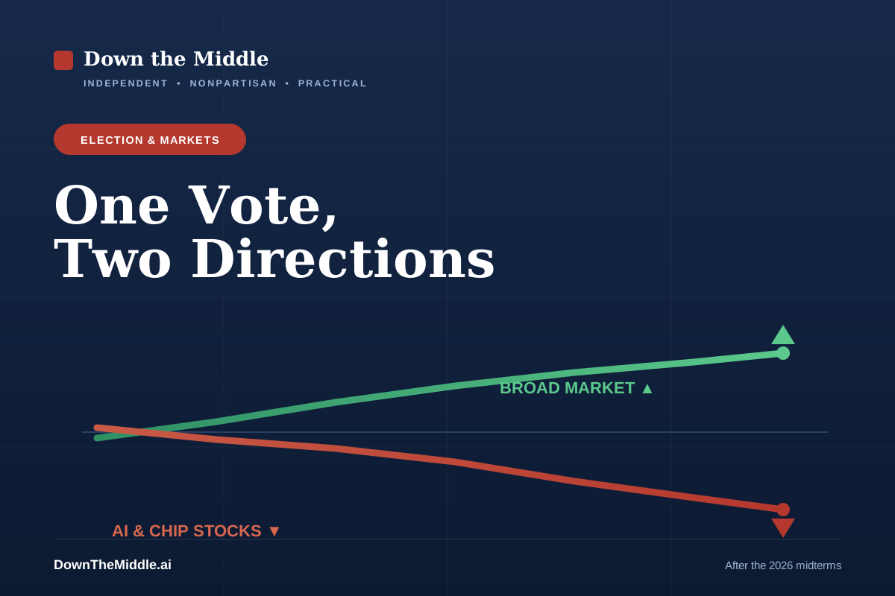

Democrats Won Congress. Why Did AI Stocks Fall While the Market Rose?
November 6, 2026 · Independent, nonpartisan analysis

Democrats won control of both the House and the Senate in Tuesday’s midterm elections, according to projections from the Associated Press and major networks. That sets up divided government: a Democratic Congress and a Republican president for the next two years. [1]
If you only read the headline “AI stocks plunge after the election,” you would assume the market hated the result. The fuller picture is more interesting—and more useful.
What actually happened in the market
The day after the election, the broad market rose sharply. The Dow jumped about 3%—roughly 1,600 points—its best post-midterm session in decades, with the S&P 500 up around 1.6%. But that rally was powered mostly by falling oil prices and lower bond yields, which ease worries about inflation and borrowing costs, not by enthusiasm for the election itself. [2]
Underneath that green day, one group fell: AI and semiconductor stocks. Nvidia slipped about 3% even as the Dow soared, and memory and chip names like Micron and Marvell dropped 7% or more. A day later the selling spread—the Nasdaq fell nearly 5% intraday, Nvidia dropped roughly 8%, and Micron fell sharply again. [2] [3]
Why AI stocks in particular
The clearest trigger was not federal policy but a local one: data centers. On the same ballots, voters approved restrictions in the large majority of local data-center measures—by some counts, around 38 of 39. In Texas, the incoming governor campaigned on pausing new data-center construction until residents get protections on electricity costs and the grid, and the outgoing governor had already frozen some permits during an audit. [2] [3]
Data centers are where AI chips go to work. If communities slow their construction, the demand for those chips can get pushed into later years. One bank estimated that pauses could put roughly 30% of planned 2028 U.S. data-center capacity at risk. That is the fear investors were pricing—not a new federal law. [3]
The case from the left
The argument more common on the left is that this is accountability finally arriving. AI’s buildout consumes enormous electricity and water, and residents in many communities are being asked to absorb higher utility bills and grid strain so that data centers can expand. From this view, voters backing protections—and a Democratic Congress more willing to scrutinize power costs, antitrust, and concentration in AI—is healthy, and a market that had become overheated repricing some risk is not a crisis but a correction.
The case from the right
The argument more common on the right is that this is a warning. The AI buildout is one of the largest investment booms in the country and a central front in the technology race with China. From this view, moratoria, permitting freezes, and the prospect of tougher regulation from a Democratic Congress threaten to choke that investment—and the uncertainty of divided government is exactly what markets dislike. The selloff, in this telling, is a signal that policy is getting in the way of growth.
Down the middle
Three facts keep both stories honest. First, the broad market rose, so any clean “the election crashed stocks” claim is wrong. Second, the AI weakness is real but concentrated, and it is driven largely by state and local fights over data centers—not by a federal crackdown that has not happened. Analysts at one major bank said they do not expect a nationwide ban, and restrictions are being set mostly city by city. [2]
Third, the AI trade was already stretched before Tuesday. Plenty of investors had been warning about high valuations and “bubble” dynamics for months, and some of this week’s move is a rotation out of expensive tech that the election accelerated rather than caused. The hard part of the analysis—and the part the loudest headlines skip—is separating the election effect from a repricing that was coming anyway.
What to watch next
Watch three things: how many of those local data-center restrictions actually take effect versus get softened; what the big AI companies say about their spending plans in upcoming earnings; and whether the Democratic Congress moves from campaign talk to actual bills on AI, energy, or antitrust. Until then, be skeptical of any single-sentence explanation—on either side—for a market that moved in two directions at once. [3]
Sources and primary documents
- [1] NBC News — Democrats win control of Congress, 2026 midterm results
- [2] INDmoney — Dow surged while Nvidia and semiconductors fell after the midterms (Nov 4, 2026)
- [3] Al Jazeera — AI stocks plunge after election, driving down US markets (Nov 5, 2026)
Market figures are intraday or daily moves as reported on November 4–5, 2026, and change constantly; this is analysis, not investment advice. Election results reflect projections as of publication.